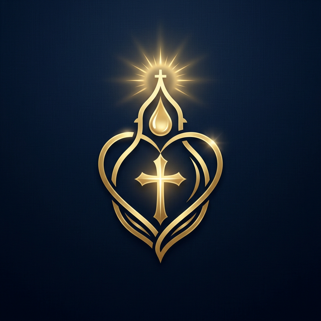

Sua mentoria cristã personalizada, fundamentada na Palavra, disponível 24h para cada passo da sua caminhada.
Inicie sua jornada espiritual AIOS
Responda ao diagnóstico para receber um plano de crescimento sob medida para você.